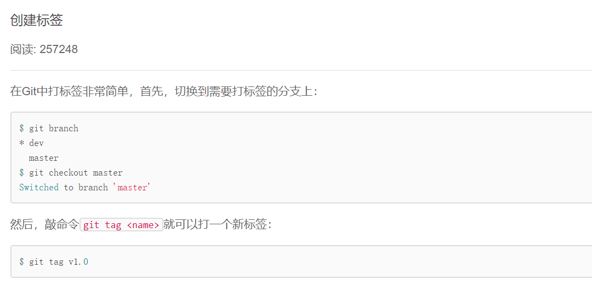
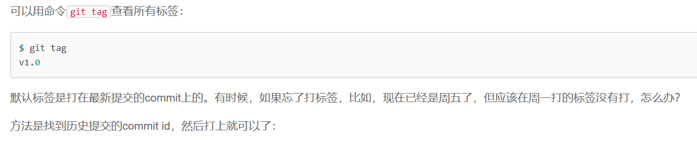
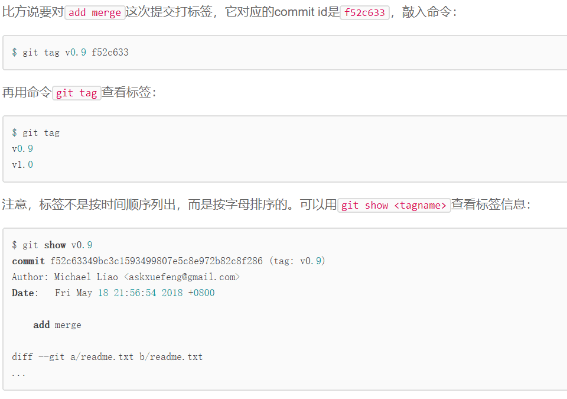
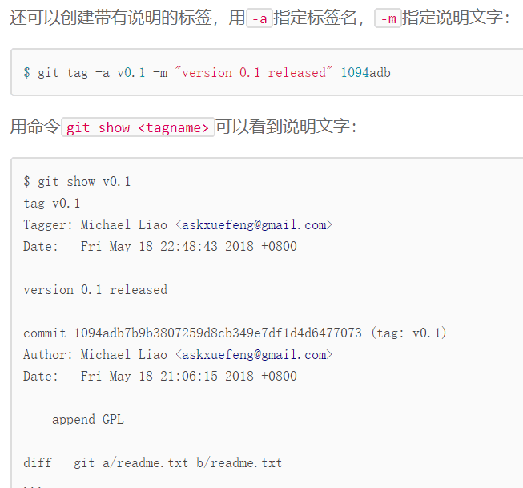
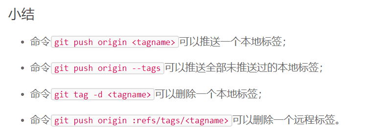
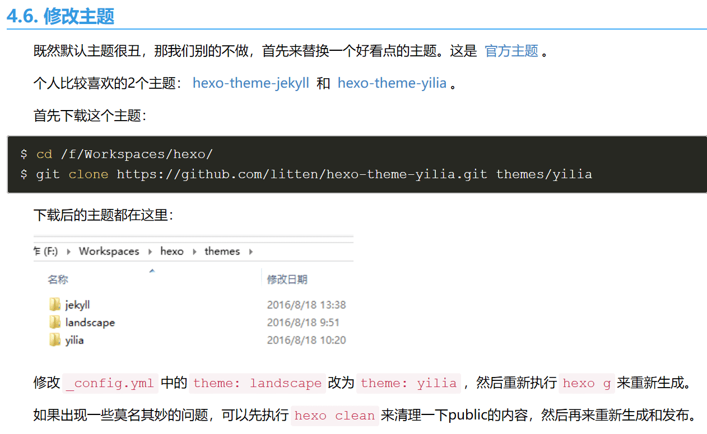

Git
- 工作区和暂存区
- 撤销修改
- 远程仓库
- 分支合并与删除
- 打标签
- ssh密钥
- Hexo主题的修改
- 我喜欢的主题链接：湖绿风
- 操作步骤
1 | 一些小知识点总结： |
【Git】 撤销修改
情况一：没有使用 $ git add readme.txt 提交到暂存区
直接使用$ git checkout -- readme.txt ，即可撤销
情况二：已经使用 $ git add readme.txt 命令提交到暂存区了
此时分两步：
1.使用$ git reset HEAD readme.txt使其返回到情况一！
2.使用情况一的命令$ git checkout -- readme.txt即可撤销
【Git】 删除文件
1 | 一般情况下，你通常直接在文件管理器中把没用的文件删了，或者用rm命令删了： |
这个时候，Git知道你删除了文件，因此，工作区和版本库就不一致了，git status命令会立刻告诉你哪些文件被删除了：
1 | $ git status |
现在你有两个选择：
1.假如你是误删，使用$ git checkout --readme.txt,就可以恢复了
2.如果确实要从版本库中删除该文件，那就用命令$ git rm删掉，并且$ git commit：1
2
3
4
5
6
7$ git rm readme.txt
rm 'readme.txt'
$ git commit -m "remove readme.txt"
[master d46f35e] remove readme.txt
1 file changed, 1 deletion(-)
delete mode 100644 test.txt
现在文件就从版本库中被删除了！
但是此时
版本回退功能$ git reset --hard HEAD^通过此命令可以返回上一个版本！———————————————————————————————————————————————————————————————————————————————————
【Git】 远程仓库
多人开发的时候，如果想参与开发，怎么办呢？
1.在github里找到别人的仓库，Fork一份（此时你的仓库里有一份一模一样的）
2.把Fork的仓库clone到本地仓库，这样就可以在git里对其就行操作啦！（Fork过来了，就是我个人的仓库啦，想怎么修改怎么修改）
3.如果你认为你开发的部分已经相对完善，在github上pull request一下，如果原仓库持有者认为你的分支不错，会将你的分支merge到master分支上
补充：怎么样知道自己的本地仓库有没有和远程仓库建立联系呢？
又或者已经建立了联系，但不知道和谁建立了联系？
如何删除已建立的联系呢?
1.使用$ git remote命令查看是否建立联系， 如果已经建立了联系，会出现origin
2.使用$ git remote -v查看和谁建立了联系
3.如果已经建立联系了 此时利用此命令取消联系
此时利用此命令取消联系
【Git】 分支合并与修改
在dev分支上，已经add，并且commit了dev01.txt文件，此时准备将其合并到master分支！
master分支，在master分支上，执行如下命令行：$ git merge dev(此方法为快速合并)另一种合并方法：
$ git merge --no-ff -m "bulabulabula" dev （非快速合并）合并之后可以用
$ git log --graph --pretty=oneline --abbrev-commit查看历史分支——————————————————————————————————————————————————————————————————————————————————————
【Git】 打标签





—
【Git】 ssh密钥

注意：一个ssh密钥只能绑定一个github账号
【Hexo】 主题修改操作步骤

THE END
参考链接：
远程仓库-廖雪峰的官方网站
Hexo 博客搭建参考链接